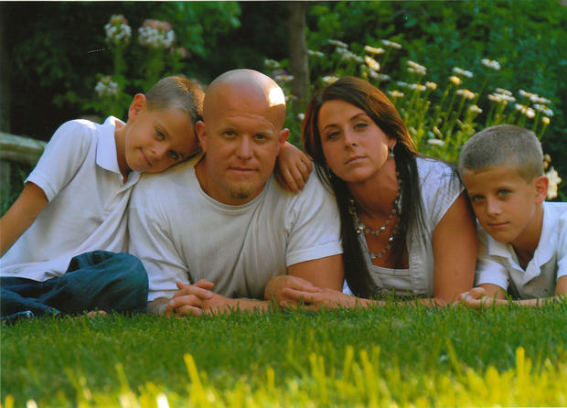

<div class="container container-flex top-ten mg">
    <main role="main">
        <article class="article-featured">
            <h2 class="article-title">Idealna rodzina</h2>
            <p class="article-body">Jest 2008 rok. Chris Coleman i jego żona Sheri mieszkają w niewielkiej
                miejscowości Waterloo (USA, stan Illinois). Mają dwójkę udanych synów: Garett ma 11 lat, a Gavin
                9. Wszyscy są zgodni co do tego, że Chris jest bardzo dobrym ojcem – mimo że dużo pracuje, to
                cały wolny czas stara się spędzać z dziećmi; bawią się wtedy razem, ciągle się śmieją i
                wygłupiają.

                Colemanowie mieszkają w pięknym domu leżącym w najatrakcyjniejszej części miejscowości i według
                znajomych oraz bliskich są po prostu rodziną idealną.</p>
            
        </article>
        <article class="article-list">
            <h3>Szef ochrony</h3>
            <div class="murderer-info">
                <div class="article-info-img">
                    
                </div>
                <p class="article-info-text">
                    Małżonkowie prowadzą dostatnie życie, gdyż Chrisowi, który jest byłym żołnierzem piechoty
                    morskiej, udało się zdobyć doskonale płatną pracę: jest szefem ochrony znanej w całym kraju
                    telewizyjnej kaznodziejki Joyce Meyer, założycielki i liderki chrześcijańskiego
                    duszpasterstwa wywodzącego się z protestantyzmu. Dzięki programom telewizyjnym i radiowym
                    oraz wielu świetnie sprzedającym się książkom Joyce Meyer znajduje się na liście
                    najbogatszych pastorów w Stanach Zjednoczonych. <br><br>

                    Kaznodziejka jest również bardzo kontrowersyjną postacią. Ma wielu wrogów, ma również
                    zwolenników, a niektórzy spośród nich również mogą stanowić dla niej
                    niebezpieczeństwo.<br><br>

                    Joyce Meyer każdego dnia otrzymuje pełne nienawiści maile, których nadawcy niejednokrotnie
                    wprost grożą jej śmiercią. Zadaniem Chrisa jako szefa ochrony jest także dozór nad tą
                    korespondencją.
                </p>
            </div>
            <h3>Służbowe podróże</h3>
            <div class="murderer-info">
                <p class="article-info-text">
                    Mężczyzna ma więc w pracy wiele obowiązków, ale najbardziej uciążliwe spośród nich wynikają
                    z faktu, że Joyce przez większość czasu podróżuje, spotykając się ze swoimi wiernymi w całym
                    kraju. Jako szef ochrony Chris musi jej towarzyszyć w tych podróżach – zdarza się, że poza
                    domem przebywa nawet przez wiele tygodni z rzędu. <br><br>

                    Wysokie zarobki, tj. ponad sto tysięcy dolarów rocznie, naturalnie po części równoważą te
                    niedogodności, ale wyjazdy Chrisa to dla wszystkich ogromny stres. Sheri i dzieci bardzo za
                    nim tęsknią – chłopcy w kalendarzu zaznaczają dni nieobecności ojca i dosłownie liczą dni do
                    jego powrotu. <br><br>

                    Te bezustanne wyjazdy powodują też konflikty małżeńskie. Sheri czuje się nie tylko samotna,
                    ale także przeciążona obowiązkami domowymi
            </div>
            <h3>Cisza przed burzą</h3>
            <div class="murderer-info">
                <p class="article-info-text">
                    W październiku 2008 roku Chris musi jechać na Florydę do miasta Tampa. Sheri, która na
                    Florydzie chodziła do szkoły średniej, kontaktuje się przy tej okazji ze swoją dawną
                    przyjaciółką, Tarą L., która wciąż tam mieszka, i pyta ją, czy nie zechciałaby poznać
                    Chrisa. <br><br>

                    Tara i Chris rzeczywiście się spotykają. Chris skarży się na samotność, która bardzo mu
                    dokucza podczas rozłąki z Sheri i chłopcami. Na szczęście po tej długiej podróży Chris przez
                    kilka tygodni nie musi nigdzie wyjeżdżać, stara się więc nacieszyć obecnością w domu, jak
                    tylko się da. <br><br>

                    Wkrótce jednak się okazuje, że odpoczynek na łonie rodziny nie był mu dany.
            </div>
            <h3>Pierwszy mail</h3>
            <div class="murderer-info">
                <p class="article-info-text">
                    W dniu 14 listopada 2008 roku, w piątek, późnym wieczorem, w jego służbowej skrzynce
                    mailowej pojawia się wiadomość, której nadawca ma wiele mówiący login „destroychris”
                    (dosłownie „zniszczyć Chrisa”). Treść wiadomości jest następująca: „Meyer ma przestać
                    produkować te gówniane kazania, inaczej rodzina Colemana zginie. Zabiję jego żonę i dzieci”.
                    <br><br>

                    Kolejnego dnia mężczyzna otrzymuje kilka maili o podobnej treści. Nadawcą jest tenże sam
                    „destroychris”, który, jak się okazuje, bardzo dobrze zna terminarz wyjazdów Chrisa i wie,
                    że wkrótce czeka go kolejny wyjazd z kaznodziejką. Autor wiadomości robi aluzje, że podczas
                    tego wyjazdu może zaatakować rodzinę Colemana. <br><br>

                    Chris, choć z dużym wahaniem, decyduje się w końcu poinformować żonę o otrzymywanych
                    groźbach. Sheri jest przerażona.
            </div>
            <h3>Strach</h3>
            <div class="murderer-info">
                <p class="article-info-text">
                    Kilka dni później Chris zgłasza sprawę na policję. Funkcjonariusze wypytują go o to, czy
                    kiedykolwiek wcześniej ktoś z otoczenia Joyce Meyer otrzymywał podobne groźby. Chris
                    twierdzi, że nic takiego nigdy nie miało miejsca, a przynajmniej on sam nic nie wie na ten
                    temat. <br><br>

                    Po przeanalizowaniu wszystkich informacji policja otwarcie stwierdza, że na razie nie można
                    nic zrobić, zatem Chris prosi funkcjonariuszy o to, żeby – przynajmniej podczas jego
                    nieobecności – zwiększyć częstotliwość patroli w okolicy. <br><br>

                    Tak też się dzieje. <br><br>

                    Ale pomimo że większa liczba patroli w okolicy jest wyraźnie widoczna, Sheri wciąż bardzo
                    się boi. Często prosi swoją przyjaciółkę o to, by u niej nocowała. Wielokrotnie robi mężowi
                    wyrzuty, że praca jest dla niego ważniejsza niż bezpieczeństwo rodziny.
            </div>
            <h3>Koperta</h3>
            <div class="murderer-info">
                <p class="article-info-text">
                    Mijają mniej więcej dwa miesiące. Pewnego dnia Chris wyjmuje korespondencję ze skrzynki
                    pocztowej stojącej przed domem. Natrafia na podejrzaną kopertę – bez podpisu i znaczka.
                    Przeczucie go nie myli: nadawca listu zapowiada, że wkrótce wybije ostatnia godzina dla
                    niego oraz jego rodziny: wszyscy zginą podczas snu. <br><br>

                    Teraz sytuacja wygląda już dużo poważniej, gdyż wiadomo, że tajemniczy szantażysta zna adres
                    zamieszkania Chrisa i nie obawia się nawet zbliżyć do jego domu. <br><br>

                    Wkrótce do skrzynki trafiają kolejne listy, o treści takiej jak np. „Obserwujemy was przez
                    okna”. Chris i Sherry decydują się zainstalować w domu kamery, chcą bowiem zobaczyć osobę,
                    która wrzuca listy do ich skrzynki. Nagrania z kamer są rejestrowane i przenoszone na dysk
                    komputera stojącego w domu. <br><br>

                    Po tym, jak system zostaje zainstalowany, listy przestają przychodzić dosłownie z dnia na
                    dzień. Rodzina Colemanów powoli odzyskuje spokój. <br><br>

                    Można założyć, że ów spokój przekłada się również na relacje małżeńskie, gdyż wiosną 2009 –
                    co wynika z maili, które Sherry pisała w kwietniu do swojego przyjaciela – ulegają one
                    znacznej poprawie.
            </div>
            <h3>Niewyraźna czarna sylwetka</h3>
            <div class="murderer-info">
                <p class="article-info-text">
                    Sytuacja jednak zmienia się całkowicie, gdy 27 kwietnia Chris znowu wyjmuje ze skrzynki
                    przed domem list bez znaczka i podpisu. Mężczyzna otwiera kopertę, domyślając się, że
                    lektura treści listu nie będzie przyjemna. <br><br>

                    I faktycznie: początek tekstu brzmi: „Wasz najgorszy koszmar stanie się prawdą”, a jego
                    reszta utrzymana jest w tonie jeszcze bardziej agresywnym, niż to miało miejsce w
                    poprzednich listach. <br><br>

                    Chris natychmiast biegnie do domu, by przejrzeć nagrania z nocy z 26 na 27 kwietnia. Owszem,
                    na filmie można dostrzec osobę, która podchodzi do skrzynki i coś do niej wrzuca, ale widać
                    jedynie kontury czarnej sylwetki i od razu wiadomo, że na tej podstawie nie da się nikogo
                    rozpoznać.
            </div>
            <h3>Sąsiad-policjant</h3>
            <div class="murderer-info">
                <p class="article-info-text">
                    Małżonkowie informują o wszystkim policję, która jeszcze bardziej zwiększa liczbę patroli w
                    okolicy. Swoje wsparcie oferuje nawet jeden z jej mieszkańców, który zresztą sam jest
                    policjantem. To Justin B., sierżant policji i bezpośredni sąsiad Chrisa. <br><br>

                    Mimo tak bliskiego sąsiedztwa on i Chris nie mają wprawdzie ze sobą żadnych kontaktów
                    towarzyskich, Justin jednak z własnej inicjatywy dzwoni do Chrisa i mówi mu, że gdyby coś
                    się działo, to jest do jego dyspozycji; Justin podkreśla, że w razie czego będzie mógł
                    dotrzeć do domu Chrisa znacznie szybciej niż jego koledzy policjanci. Justin mówi również,
                    że w pokoju swojego trzyletniego syna może zamontować kamerę, dzięki której będzie można
                    filmować wjazd na posesję Chrisa i tym samym jego skrzynkę na listy. Chris naturalnie z
                    chęcią przyjmuję tę propozycję i kamera zostaje zamontowana. <br><br>

                    Mija kilka dni, nie dzieje się zupełnie nic.

            </div>
        </article>
    </main>
</div>
